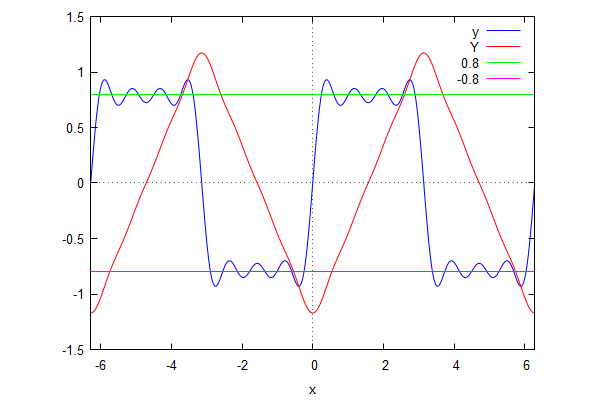
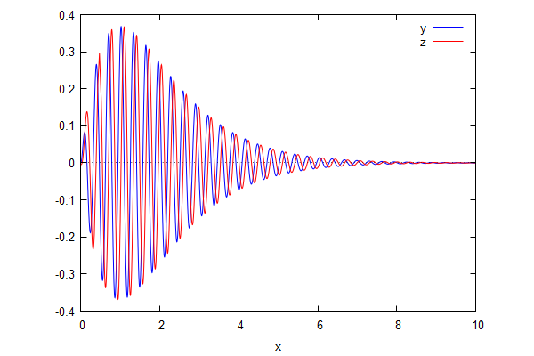
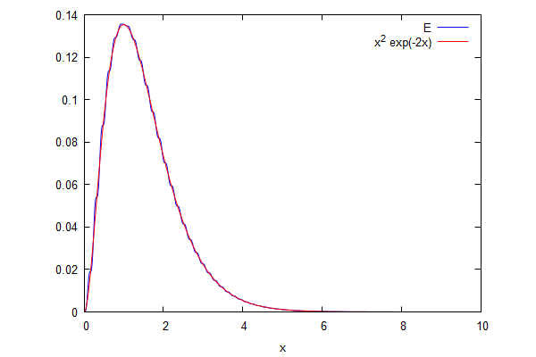
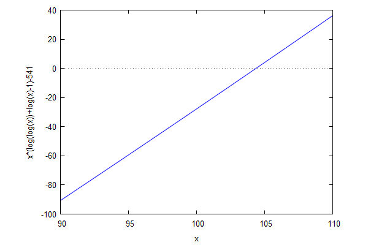
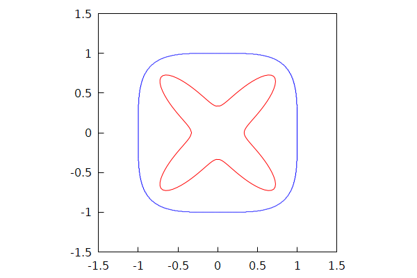

\( \DeclareMathOperator{\abs}{abs} \newcommand{\ensuremath}[1]{\mbox{$#1$}} \)
Lab sheet 8
| --> | p [ 0 ] : sqrt ( 1 / 2 ) ; p [ 1 ] : sqrt ( 3 / 2 ) · x ; p [ 2 ] : sqrt ( 5 / 8 ) · ( 3 · x ^ 2 − 1 ) ; p [ 3 ] : sqrt ( 7 / 8 ) · ( 5 · x ^ 3 − 3 · x ) ; |
\[\operatorname{ }\frac{1}{\sqrt{2}}\]
\[\operatorname{ }\frac{\sqrt{3} x}{\sqrt{2}}\]
\[\operatorname{ }\frac{\sqrt{5} \left( 3 {{x}^{2}}-1\right) }{{{2}^{\frac{3}{2}}}}\]
\[\operatorname{ }\frac{\sqrt{7} \left( 5 {{x}^{3}}-3 x\right) }{{{2}^{\frac{3}{2}}}}\]
| --> | apply ( matrix , makelist ( makelist ( integrate ( p [ i ] · p [ j ] , x , − 1 , 1 ) , j , 0 , 3 ) , i , 0 , 3 ) ) ; |
\[\operatorname{ }\begin{pmatrix}1 & 0 & 0 & 0\\ 0 & 1 & 0 & 0\\ 0 & 0 & 1 & 0\\ 0 & 0 & 0 & 1\end{pmatrix}\]
| --> | p [ 4 ] : a · x ^ 4 + b · x ^ 2 + c ; |
\[\operatorname{ }a {{x}^{4}}+b {{x}^{2}}+c\]
| --> | sols : solve ( cons ( integrate ( p [ 4 ] ^ 2 , x , − 1 , 1 ) − 1 , makelist ( integrate ( p [ i ] · p [ 4 ] , x , − 1 , 1 ) , i , 0 , 3 , 2 ) ) ) ; |
\[\operatorname{(sols) }[[c=\frac{9}{{{2}^{\frac{7}{2}}}},b=-\frac{45}{{{2}^{\frac{5}{2}}}},a=\frac{105}{{{2}^{\frac{7}{2}}}}],[c=-\frac{9}{{{2}^{\frac{7}{2}}}},b=\frac{45}{{{2}^{\frac{5}{2}}}},a=-\frac{105}{{{2}^{\frac{7}{2}}}}]]\]
| --> | p [ 4 ] : subst ( sols [ 1 ] , p [ 4 ] ) ; |
\[\operatorname{ }\frac{105 {{x}^{4}}}{{{2}^{\frac{7}{2}}}}-\frac{45 {{x}^{2}}}{{{2}^{\frac{5}{2}}}}+\frac{9}{{{2}^{\frac{7}{2}}}}\]
| --> | q ( n ) : = sqrt ( n + 1 / 2 ) / ( 2 ^ n · n ! ) · diff ( ( x ^ 2 − 1 ) ^ n , x , n ) ; |
\[\operatorname{ }\operatorname{q}(n):=\frac{\sqrt{n+\frac{1}{2}}}{{{2}^{n}} n!} \left( \frac{{{d}^{n}}}{d {{x}^{n}}} {{\left( {{x}^{2}}-1\right) }^{n}}\right) \]
| --> | makelist ( expand ( p [ n ] − q ( n ) ) , n , 0 , 4 ) ; |
\[\operatorname{ }[0,0,0,0,0]\]
| --> | apply ( matrix , makelist ( makelist ( integrate ( p [ i ] · p [ j ] , x , − 1 , 1 ) , j , 0 , 4 ) , i , 0 , 4 ) ) ; |
\[\operatorname{ }\begin{pmatrix}1 & 0 & 0 & 0 & 0\\ 0 & 1 & 0 & 0 & 0\\ 0 & 0 & 1 & 0 & 0\\ 0 & 0 & 0 & 1 & 0\\ 0 & 0 & 0 & 0 & 1\end{pmatrix}\]
| --> | kill ( p , q ) $ |
| --> | apply ( matrix , makelist ( makelist ( subst ( log ( x ) = y , integrate ( x ^ n · log ( x ) ^ m , x ) ) , m , 0 , 5 ) , n , 0 , 6 ) ) ; |
\[\operatorname{ }\begin{pmatrix}x & x y-x & x\, \left( {{y}^{2}}-2 y+2\right) & x\, \left( {{y}^{3}}-3 {{y}^{2}}+6 y-6\right) & x\, \left( {{y}^{4}}-4 {{y}^{3}}+12 {{y}^{2}}-24 y+24\right) & x\, \left( {{y}^{5}}-5 {{y}^{4}}+20 {{y}^{3}}-60 {{y}^{2}}+120 y-120\right) \\ \frac{{{x}^{2}}}{2} & \frac{{{x}^{2}} y}{2}-\frac{{{x}^{2}}}{4} & \frac{{{x}^{2}} \left( 2 {{y}^{2}}-2 y+1\right) }{4} & \frac{{{x}^{2}} \left( 4 {{y}^{3}}-6 {{y}^{2}}+6 y-3\right) }{8} & \frac{{{x}^{2}} \left( 2 {{y}^{4}}-4 {{y}^{3}}+6 {{y}^{2}}-6 y+3\right) }{4} & \frac{{{x}^{2}} \left( 4 {{y}^{5}}-10 {{y}^{4}}+20 {{y}^{3}}-30 {{y}^{2}}+30 y-15\right) }{8}\\ \frac{{{x}^{3}}}{3} & \frac{{{x}^{3}} y}{3}-\frac{{{x}^{3}}}{9} & \frac{{{x}^{3}} \left( 9 {{y}^{2}}-6 y+2\right) }{27} & \frac{{{x}^{3}} \left( 9 {{y}^{3}}-9 {{y}^{2}}+6 y-2\right) }{27} & \frac{{{x}^{3}} \left( 27 {{y}^{4}}-36 {{y}^{3}}+36 {{y}^{2}}-24 y+8\right) }{81} & \frac{{{x}^{3}} \left( 81 {{y}^{5}}-135 {{y}^{4}}+180 {{y}^{3}}-180 {{y}^{2}}+120 y-40\right) }{243}\\ \frac{{{x}^{4}}}{4} & \frac{{{x}^{4}} y}{4}-\frac{{{x}^{4}}}{16} & \frac{{{x}^{4}} \left( 8 {{y}^{2}}-4 y+1\right) }{32} & \frac{{{x}^{4}} \left( 32 {{y}^{3}}-24 {{y}^{2}}+12 y-3\right) }{128} & \frac{{{x}^{4}} \left( 32 {{y}^{4}}-32 {{y}^{3}}+24 {{y}^{2}}-12 y+3\right) }{128} & \frac{{{x}^{4}} \left( 128 {{y}^{5}}-160 {{y}^{4}}+160 {{y}^{3}}-120 {{y}^{2}}+60 y-15\right) }{512}\\ \frac{{{x}^{5}}}{5} & \frac{{{x}^{5}} y}{5}-\frac{{{x}^{5}}}{25} & \frac{{{x}^{5}} \left( 25 {{y}^{2}}-10 y+2\right) }{125} & \frac{{{x}^{5}} \left( 125 {{y}^{3}}-75 {{y}^{2}}+30 y-6\right) }{625} & \frac{{{x}^{5}} \left( 625 {{y}^{4}}-500 {{y}^{3}}+300 {{y}^{2}}-120 y+24\right) }{3125} & \frac{{{x}^{5}} \left( 625 {{y}^{5}}-625 {{y}^{4}}+500 {{y}^{3}}-300 {{y}^{2}}+120 y-24\right) }{3125}\\ \frac{{{x}^{6}}}{6} & \frac{{{x}^{6}} y}{6}-\frac{{{x}^{6}}}{36} & \frac{{{x}^{6}} \left( 18 {{y}^{2}}-6 y+1\right) }{108} & \frac{{{x}^{6}} \left( 36 {{y}^{3}}-18 {{y}^{2}}+6 y-1\right) }{216} & \frac{{{x}^{6}} \left( 54 {{y}^{4}}-36 {{y}^{3}}+18 {{y}^{2}}-6 y+1\right) }{324} & \frac{{{x}^{6}} \left( 324 {{y}^{5}}-270 {{y}^{4}}+180 {{y}^{3}}-90 {{y}^{2}}+30 y-5\right) }{1944}\\ \frac{{{x}^{7}}}{7} & \frac{{{x}^{7}} y}{7}-\frac{{{x}^{7}}}{49} & \frac{{{x}^{7}} \left( 49 {{y}^{2}}-14 y+2\right) }{343} & \frac{{{x}^{7}} \left( 343 {{y}^{3}}-147 {{y}^{2}}+42 y-6\right) }{2401} & \frac{{{x}^{7}} \left( 2401 {{y}^{4}}-1372 {{y}^{3}}+588 {{y}^{2}}-168 y+24\right) }{16807} & \frac{{{x}^{7}} \left( 16807 {{y}^{5}}-12005 {{y}^{4}}+6860 {{y}^{3}}-2940 {{y}^{2}}+840 y-120\right) }{117649}\end{pmatrix}\]
| --> | u : exp ( − x ^ 2 ) ; U : integrate ( u , x ) ; |
\[\operatorname{(u) }{{\% e}^{-{{x}^{2}}}}\]
\[\operatorname{(U) }\frac{\sqrt{\ensuremath{\pi} } \operatorname{erf}(x)}{2}\]
| --> | u : 1 / log ( x ) ; U : integrate ( u , x ) ; |
\[\operatorname{(u) }\frac{1}{\log{(x)}}\]
\[\operatorname{(U) }-\operatorname{gamma\_ incomplete}\left( 0,-\log{(x)}\right) \]
| --> |
u
:
1
/
(
sqrt
(
1
−
x
^
2
)
·
sqrt
(
1
−
2
·
x
^
2
)
)
;
U : elliptic_f ( asin ( x ) , 2 ) ; err : diff ( U , x ) − u ; |
\[\operatorname{(u) }\frac{1}{\sqrt{1-2 {{x}^{2}}} \sqrt{1-{{x}^{2}}}}\]
\[\operatorname{(U) }\operatorname{elliptic\_ f}\left( \operatorname{asin}(x),2\right) \]
\[\operatorname{(err) }0\]
| --> |
u
:
1
/
sqrt
(
x
^
8
+
1
)
;
U : x · hypergeometric ( [ 1 / 8 , 1 / 2 ] , [ 9 / 8 ] , − x ^ 8 ) ; err : diff ( U , x ) − u $ err : taylor ( err , x , 0 , 10 ) ; |
\[\operatorname{(u) }\frac{1}{\sqrt{{{x}^{8}}+1}}\]
\[\operatorname{(U) }\operatorname{hypergeometric}\left( [\frac{1}{8},\frac{1}{2}],[\frac{9}{8}],-{{x}^{8}}\right) x\]
\[\operatorname{(err) }0+...\]
| --> |
integrate
(
sin
(
x
)
·
log
(
log
(
x
)
)
,
x
)
;
integrate ( sin ( sin ( sin ( x ) ) ) , x ) ; integrate ( 1 / sqrt ( 1 + x + x ^ 10 ) , x ) ; |
\[\operatorname{ }\int {\left. \frac{\cos{(x)}}{x \log{(x)}}dx\right.}-\cos{(x)} \log{\left( \log{(x)}\right) }\]
\[\operatorname{ }\int {\left. \sin{\left( \sin{\left( \sin{(x)}\right) }\right) }dx\right.}\]
\[\operatorname{ }\int {\left. \frac{1}{\sqrt{{{x}^{10}}+x+1}}dx\right.}\]
| --> | kill ( u , U , err ) $ |
| --> | y : sin ( x ) + sin ( 3 · x ) / 3 + sin ( 5 · x ) / 5 + sin ( 7 · x ) / 7 ; |
\[\operatorname{(y) }\frac{\sin{\left( 7 x\right) }}{7}+\frac{\sin{\left( 5 x\right) }}{5}+\frac{\sin{\left( 3 x\right) }}{3}+\sin{(x)}\]
| --> | Y : integrate ( y , x ) ; |
\[\operatorname{(Y) }-\frac{\cos{\left( 7 x\right) }}{49}-\frac{\cos{\left( 5 x\right) }}{25}-\frac{\cos{\left( 3 x\right) }}{9}-\cos{(x)}\]
| --> | wxplot2d ( [ y , Y , 0 . 8 , − 0 . 8 ] , [ x , − 2 · %pi , 2 · %pi ] , [ legend , "y" , "Y" , "0.8" , "-0.8" ] ) ; |
\[\operatorname{ }\]

\[\operatorname{ }\]
| --> | kill ( y , Y ) $ |
| --> |
y
:
x
·
exp
(
−
x
)
·
sin
(
20
·
x
)
;
z : 20 · integrate ( y , x ) ; |
\[\operatorname{(y) }x {{\% e}^{-x}} \sin{\left( 20 x\right) }\]
\[\operatorname{(z) }-\frac{20 {{\% e}^{-x}} \left( \left( 401 x-399\right) \sin{\left( 20 x\right) }+\left( 8020 x+40\right) \cos{\left( 20 x\right) }\right) }{160801}\]
| --> | wxplot2d ( [ y , z ] , [ x , 0 , 10 ] , [ legend , "y" , "z" ] ) ; |
\[\operatorname{ }\]

\[\operatorname{ }\]
| --> | integrate ( coeff ( expand ( trigsimp ( expand ( ( y ^ 2 + z ^ 2 ) · exp ( 2 · x ) ) ) ) , x , 2 ) , x , 0 , 2 · %pi ) / ( 2 · %pi ) ; |
\[\operatorname{ }\frac{801}{802}\]
| --> | wxplot2d ( [ y ^ 2 + z ^ 2 , x ^ 2 · exp ( − 2 · x ) ] , [ x , 0 , 10 ] , [ legend , "E" , "x^2 exp(-2x)" ] ) ; |
\[\operatorname{ }\]

\[\operatorname{ }\]
| --> | solve ( makelist ( integrate ( x ^ k · ( a · x ^ 2 + b · x + c ) · exp ( − x ) , x , 0 , inf ) − k , k , 1 , 3 ) ) ; |
\[\operatorname{ }[[c=-\frac{1}{2},b=\frac{3}{2},a=-\frac{1}{4}]]\]
| --> | err : x · ( log ( log ( x ) ) + log ( x ) − 1 ) − 541 ; |
\[\operatorname{(err) }x\, \left( \log{\left( \log{(x)}\right) }+\log{(x)}-1\right) -541\]
| --> | wxplot2d ( err , [ x , 90 , 110 ] ) ; |
\[\operatorname{ }\]

\[\operatorname{ }\]
| --> | find_root ( x · ( log ( log ( x ) ) + log ( x ) − 1 ) − 541 , x , 100 , 111 ) ; |
\[\operatorname{ }104.3555657384559\]
| --> | makelist ( a + b ^ n , n , 2 , 10 ) ; |
\[\operatorname{ }[{{b}^{2}}+a,{{b}^{3}}+a,{{b}^{4}}+a,{{b}^{5}}+a,{{b}^{6}}+a,{{b}^{7}}+a,{{b}^{8}}+a,{{b}^{9}}+a,{{b}^{10}}+a]\]
| --> |
wxdraw
(
gr2d
(
proportional_axes = xy , ip_grid = [ 100 , 100 ] , implicit ( x ^ 4 + y ^ 4 = 1 , x , − 1 . 5 , 1 . 5 , y , − 1 . 5 , 1 . 5 ) , color = red , nticks = 200 , parametric ( cos ( t ) / ( 2 + cos ( 4 · t ) ) , sin ( t ) / ( 2 + cos ( 4 · t ) ) , t , 0 , 2 · %pi ) ) ) ; |
\[\operatorname{ }\]

\[\operatorname{ }\]
| --> | fpprec : 100 ; |
\[\operatorname{(fpprec) }100\]
| --> | bfloat ( %pi ^ 76 / %e ^ 87 ) ; |
\[\operatorname{ }9.9947146427865260848967877132[44 digits]107601532266629087441688962b-1\]
| --> | expand ( factor ( exponentialize ( sin ( 2 · x ) · tan ( 2 · x ) · diff ( log ( tan ( x ) ) , x , 2 ) ) ) ) ; |
\[\operatorname{ }-4\]
Created with wxMaxima.
The source of this Maxima session can be downloaded here.